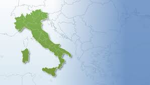
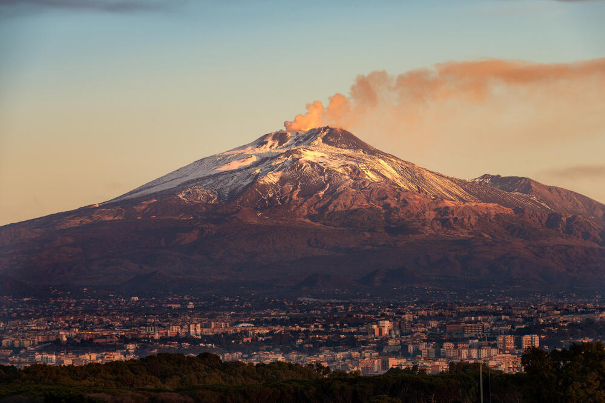
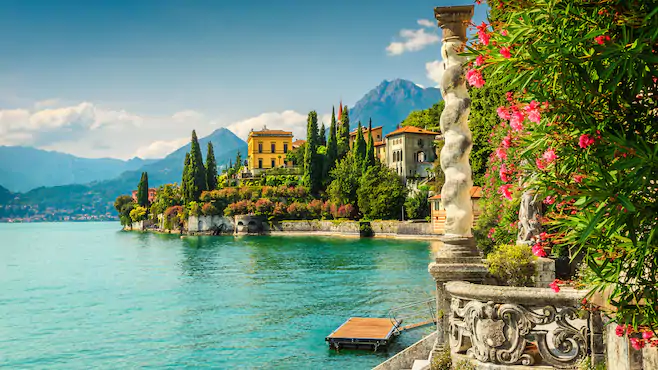

ИТАЛИЈА
Почетна страна Историја Политика Привреда Становништво Градови Култура Контакт
Прочитајте о географији Италије

Италија држава је на југу Европе. Италија обухвата Апенинско полуострво и три велика острва на Средоземном мору: Сицилију, Сардинију и Елбу. Једину копнену границу има на северу, на Алпима, где се граничи са Француском, Швајцарском, Аустријом и Словенијом. Независне државе Сан Марино и Ватикан налазе се унутар територије Италије.
Италија је место настанка Римског царства, једног од највећих царстава старог века. Варварске инвазије уништиле су Западно римско царство и омогућиле стварање германских држава на тлу Италије. Византија и Франачка су у раном средњем веку поседовале значајне делове Италије. Каснија подела Италије на мале државе омогућиле су Светом римском царству, Француској и Аустрији да доминирају италијанском политиком. Италија је уједињена у другој половини 19. века. Од уједињења па до краја Другог светског рата, Краљевина Италија је створила колонијално царство у Средоземном мору и источној Африци. Од 1946. Италија је република.
Веома је позната по кулинарским специјалитетима, моди, дизајну, одећи, архитектури, уметности, музици и осталим знаменитостима које у великом броју посећују туристи. Италија је један од оснивача НАТО-а, групе Г8 и Европске економске заједнице, данашње Европске уније.
Географија
Положај

Италија се налази у јужној Европи, између 35° и 47° северне географске ширине и 6° и 19° источне географске дужине. Италија обухвата Апенинско полуострво, три велика острва на Средоземном мору: Сицилију, Сардинију и Елбу, као и неколико мањих. Једину копнену границу има на северу, на Алпима, где се граничи са Француском, Швајцарском, Аустријом и Словенијом. Копнену границу грубо одређује алпска вододелница, која окружује Падску и Венецијску низију. Независне државе Сан Марино и Ватикан су енклаве унутар територије Италије, док је Кампионе д’Италија италијанска есклава у Швајцарској. Облик земље подсећа на чизму, а Сицилија асоцира на троугао. Излази на пет мора: Јонско, Јадранско, Лигурско, Тиренско и Средоземно море.
Укупна површина државе износи 301.230 km², од чега је 294.020 km² копно, а 7.210 km² је вода.
Рељеф
Кроз цело полуострво простиру се Апенини, а на северу један део Алпа припада Италији. Највиши врх Италије је Мон Блан де Курмајор висине 4.748 m. Дуж западне италијанске обале протежу се са севера у правцу југа следеће ривијере: Италијанска ривијера у Лигурији, Етрурска ривијера у Тоскани и Напуљска ривијера у Кампањи. Источна обала је од Трста на северу до Гаљана на југу (може се и рећи до Отранских врата).

Држава се налази на граници Евроазијске и Афричке плоче, што доприноси значајној сеизмичкој и вулканској активности. У Италији се налази 14 вулкана, од којих су четири активна: Етна на Сицилији, Стромболи, Вулкано и Везув. Везув је једини активни вулкан у континенталној Европи и познат је због своје ерупције која је уништила Помпеју и Херкуланеум. Неколико острва и брда је створено вулканском активношћу, а северозападно од Напуља се налази прилично активна калдера Кампи Флегреји.
Вода

Реке Италије отичу у Јадранско, Јонско, Средоземно, Тиренско, Лигурско, Црно и Северно море. Најдуже реке су По, Адиђе, Тибар, Ада, Ољо, Танаро, Тичино и Арно. По, са 652 km је најдужа италијанска река, тече на од Алпа на западној граници са Француској и улива се у Јадранско море. У највећа италијанска језера убрајају се Гарда (367,94 km²), [[Мађоре (212,51 km², на граници са Швајцарском) и Комо (145,9 km²) у северној Италији и Тразименско језеро (124,29 km²) и Болсена (113,55 km²) у средњој Италији.
Клима
Клима Италије драстично варира од стереотипне медитеранске климе у зависности од локације. Приморским деловима Лигурије и већим делом Апенинског полуострва јужно од Фиренце влада класична медитеранска клима. Већи део северних унутрашњих области Италије, око Торина, Милана и Болоње има континенталну климу, која се често по Кепеновој класификацији климата класификује и као влажна суптропска клима. Приморски делови полуострва могу имати драстично другачију климу од планина и долина у унутрашњости, посебно током зимских месеци, када на планинским деловима владају хладноће и снег. Приморски региони имају благе зиме и топла и обично сува лета, мада и долине у унутрашњости могу бити прилично топле лети.
Почетак странице